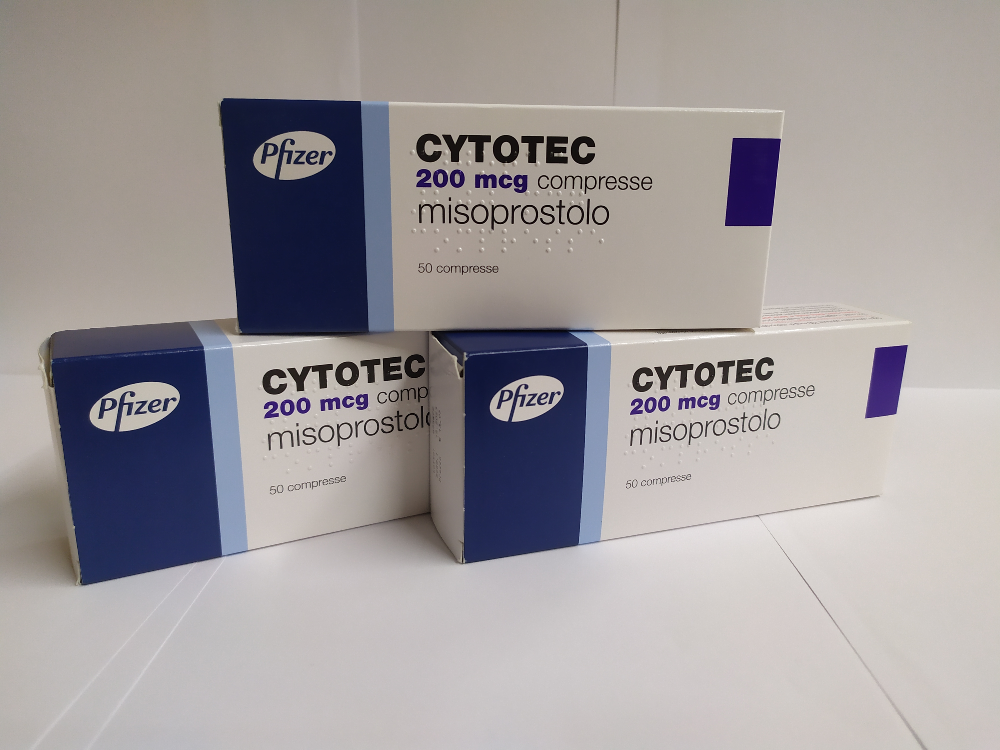

Контактная информация:
Цена: 850 грн/уп.
В наличии
Производитель: Италия
Цена: 850 грн/уп.
В наличии
Для того чтобы купить Сайтотек на фармиталь, вам нужно только позвонить нашему менеджеру.
Доставка Cytotec осуществляется транспортными компаниями, сроки выполнения заказа оговариваются менеджером Фармитал. Вы можете заказать Сайтотек,Мизопростол в городах: Одесса, Херсон, Чернигов, Северодонецк, Бердянск, Бровары, Днепр, Винница, Киев, Славянск, Полтава, Краматорск, Белая Церковь, Каменское, Мариуполь, Черновцы, Александрия, Камь янец-подольский, Львов, Запорожье, Кропивницкий, Житомир, Ивано-Франковск, Сумы, Черкассы, Константиновка, Мелитополь, Кривой Рог, Ровно, Луцк, Никополь, Павлоград, Ужгород, Кременчуг, Лисичанск, Хмельницкий, Тернополь, Харьков, Николаев, а также в других населённых пунктах Украины.
Также узнайте больше о Сайтотеке по ссылке: cytotec.com.ua
Сайтотек выпускается в таблетированной форме. Фасовка: 50 табл. / Упаковка.
Действующее вещество таблеток Сайтотек является синтезированным аналогом производимым организмом простагландина Е1. Данная молекула способствует усилению защитных свойств слизистой желудочно-кишечного тракта за счет стимуляции выработки слизи железистыми клетками желудка, усиления природной секреции бикарбонатных молекул.
Это увеличивает устойчивость слизистой желудочно-кишечного тракта, не дает агрессивным компонентам из пищи, алкогольных напитков, терапевтических препаратов наносить вред клеткам, которые формируют слизистую желудочно-кишечного тракта.
Сайтотек оказывает следующие эффекты:
– вызывает нейтрализацию кислоты за счет усиления синтеза бикарбонатов;
- защищает стенки желудка от агрессивных молекул за счет увеличения выработки слизи, улучшения ее качественного состава;
- улучшает кровоснабжение слизистой желудочно-кишечного тракта со стимуляцией регенеративных процессов.
Молекула мезопростола снижает продукцию пепсиновых молекул. Терапевтическое действие наступает через 30 минут после приема лекарства, действует в течение 180 минут. Мезопростол провоцирует сокращение миометрия, усиливая интенсивность сокращения.
Таблетка Сайтотек принимается перорально (через рот). Показано употреблять лекарственную форму непосредственно с пищей, после еды и перед отходом ко сну.
Для терапии язвенных повреждений желудочно-кишечного тракта, гастритов с эрозиями слизистой суточная доза составляет 0,8 мг с делением ее на 2-4 приема.
В целях профилактики развития язвенного поражения желудочно-кишечного тракта назначается 0,4-0,8 мг/сут с делением дозы на 2-4 приема.
При необходимости терапии препаратами группы НПВС показано принимать Сайтотек во время всего лечения.
В период обострения язвы двенадцатиперстной кишки следует принимать 1 месяц.
Через месяц производится эндоскопия. При обнаружении неполного рубцевания курс продолжается еще месяц.
Применение таблеток Сайтотек может сопровождаться:
Не превышайте дозировку, установленную вашим врачом! В случае возникновения побочных эффектов немедленно обратиться к врачу.
Сайтотек не назначается при:
Осторожность необходима при назначении таблеток Сайтотек при:
Применение препарата в дозах, превышающих терапевтические, может сопровождаться такой симптоматикой:
При возникновении какой-либо из вышеперечисленных реакций немедленно обратиться к врачу!
Строго соблюдать дозировку, определенную врачом.
Температура хранения таблеток Сайтотек – до 30 градусов Цельсия. Срок годности препарата – 3 года.